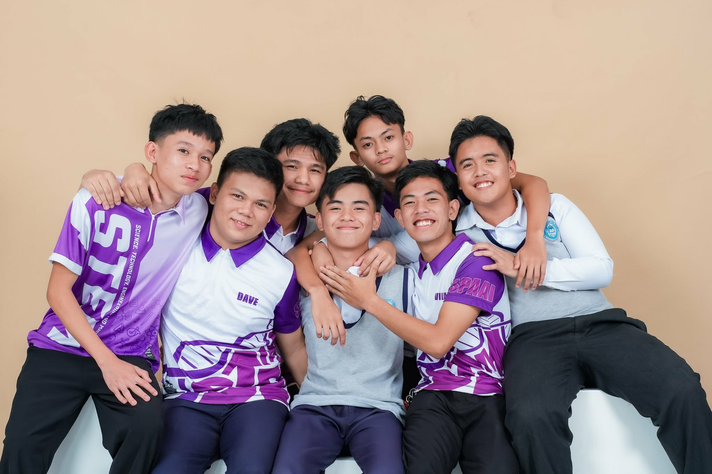

My name is Dave Niño V. Rosales. I was born on January 8, 2008, in Cebu City.
During high school, I began to develop an interest in technology and programming. I tried making a game in Roblox using Lua, and I enjoyed it a lot. However, it was quite complicated for me, so I tried learning Python instead and found it easier to understand. I learned how to make a simple calculator with it, and I also made an age estimator.
During my SHS years, I don't have many photos to share other than my graduation and the ones with my friends. I was very camera shy back then, and even now I don't really like taking photos. Aside from that, I was able to experience my first job during SHS. Although it was just an immersion, it was a first for me, and that experience fueled my passion for programming and technology even more.
